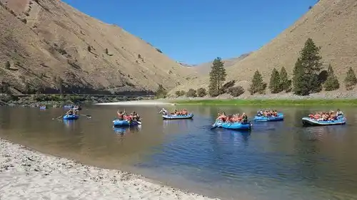
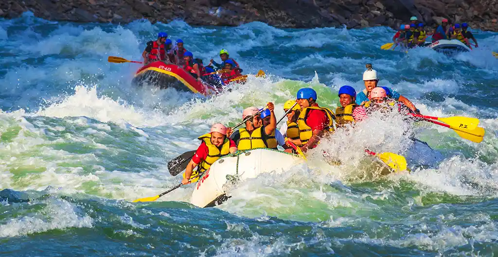

Than Just The Thrill
Enjoy the breathtaking scenery. From valleys, meadows, canyons, and high peaks: it's way more than just the rapids. it's a great way to get away from it all and relax amongst all the beauty of the great outdoors.



La rivière Apurimac (le porte-parole des dieux) dans la langue indigène inca, est la source la plus directe du fleuve Amazone, ce qui en fait le plus long fleuve du monde. Il comporte plusieurs sections, dont certaines sont très propices au rafting

La rivière Urubamba coule des hautes chaînes andines jusqu'à la vallée sacrée des Incas, en passant par le Machu Picchu et dans la jungle. Elle offre des rapides passionnants en fonction de la section de la rivière parcourue et de la période de l'année.

La rivière Urubamba coule des hautes chaînes andines jusqu'à la vallée sacrée des Incas, en passant par le Machu Picchu et dans la jungle. Elle offre des rapides passionnants en fonction de la section de la rivière parcourue et de la période de l'année.

Enjoy the breathtaking scenery. From valleys, meadows, canyons, and high peaks: it's way more than just the rapids. it's a great way to get away from it all and relax amongst all the beauty of the great outdoors.